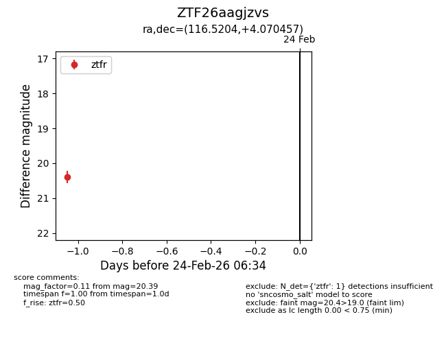
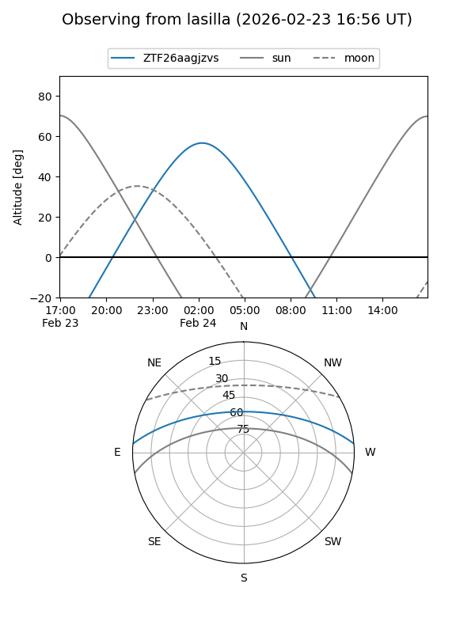
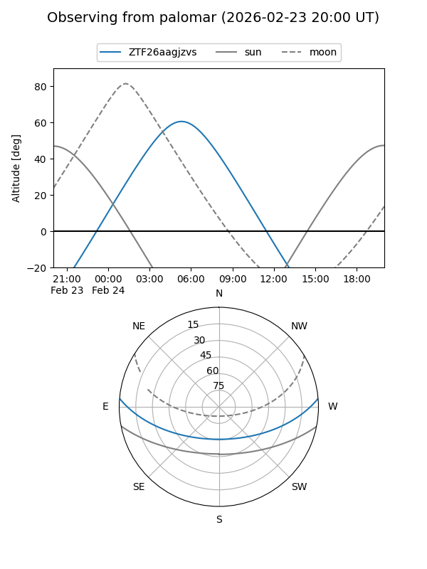

ZTF26aagjzvs
Target ZTF26aagjzvs at 2026-02-24 09:08
Aliases and brokers:
FINK: link
Lasair: link
ALeRCE: link
alt names
ZTF26aagjzvs (ztf,fink_ztf)
Coordinates:
equatorial (ra, dec) = 116.5204,+4.07046
equatorial (HMS+DMS) = 07:46:04.90,+04:04:13.64
galactic (l, b) = (215.5457,+14.00642)
Flags:
Photometry:
last ztfr=20.39
1 ztfr detections
Lightcurve

Visibility


Additional plots